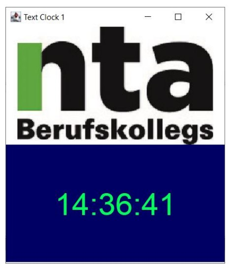

Willkommen auf meinem Portfolio
Über mich
Ich habe meine ersten Programmiererfahrungen auf dem Gymnasium gesammelt. Dort habe ich Java gelernt, Grundlagen und Algorithmen. Das Programmieren hat mich sofort fasziniert und nicht mehr losgelassen.
Mit einem Probestudium habe ich erkannt, dass Informatik mein Gebiet ist. Mir wurde jedoch auch bewusst, dass mir noch die nötigen Grundlagen fehlen. Daher habe ich eine Ausbildung an der Naturwissenschaftlich-Technischen Akademie Isny begonnen.
Während der Ausbildung ist mir klar geworden, dass mir Fullstack am besten gefällt. Die Kombination aus dem äußerst kreativen Bereich der Frontendentwicklung und dem sehr logischen und technischen Backend sagt mir sehr zu.
Mein größtes Ziel ist es, meine aktuellen Fähigkeiten zu verbessern und der beste Softwareingenieur zu werden, der ich sein kann.
Projekt
Eine Gesamtübersicht finden Sie auf meinem GitHub Account SpaRaw.
Inst_star
Das Projekt entstand mit dem Gedanken, wie anspruchsvoll die Automatisierung eines Instagram Accounts ist. Dazu soll ein Bot eingesetzt werden.
Projektdefinition
Unter vollständiger Automation gilt, dass der Bot sich selbstständig auf Instagram einloggt. Nachdem der Bot eingeloggt ist, soll er mit anderen Nutzern interagieren. Danach soll der Bot bereits bereitgestellten Content hochladen.
Der Content sind Animationen von Spirographen.
Umsetzung
Für die Umsetzung wurde die Programmiersprache Python verwendet, da sie sehr hilfreiche Funktionen bereitstellt. Um die Navigation und Interaktion zu ermöglichen, wurde ein Webcrawler mit dem Package Selenium programmiert. Die Strategie dahinter ist, die HTML-Elemente mittels ihres XPath ausfindig zu machen und anschließend mit Selenium zu interagieren. Auf diese Weise ist es möglich, die Aktionen "Text eingeben" und "Button anklicken" zu automatisieren. Für die Interaktion liket und folgt der Bot bis zu fünf verschiedenen Posts. Die Posts werden über vordefinierte Hashtags gefunden. Die Hashtags passen inhaltlich zu dem Content, der auf dem Account hochgeladen wird.
Probleme
Insgesamt sind folgende große Probleme aufgetreten:
- Ich habe noch kein Paket entdeckt, mit dem sich die Animation einfach erstellen lässt. Um dieses Problem zu lösen, wurde ein eigenes Rendering-Script entwickelt. Dieses generiert die Kurzvideos.
- Dateien können nur mittels eines Drag-and-Drop-Felds oder einer Systemeingabe hochgeladen werden. Beide Optionen sind nicht mittels Webcrawling automatisierbar. Um dies zu lösen, wurden Benutzereingaben mittels des Pakets Pyautogui simuliert.
- Instagram ändert in regelmäßigen Abständen die Bezeichnungen ihrer HTML-Elemente. Dadurch muss auch der Code entsprechend angepasst werden.
- Die Bot-Erkennung schreitet sehr schnell ein und sperrt den Account.
Technische Fähigkeiten
- Python
-
- Python 3.10
- Webcrawling
- Flask Webapp und API
- Numpy
- Pandas
- C/C++
-
- C++ 98
- Arduino
- Mikroprozessor auch mit Asselbler
- Java
-
- JavaSE-17
- AWT
- Swing
- HTML5/CSS
- Datenbanken
-
- SQLite
- SQL
Codebeispiele
Der folgende Python code ist ein Element von Inst_star. Es wird benutzt um die einzelnen Punkte des Spirografen zu simmulieren.
def __init__(self, radius, pos_x, pos_y, color):
self.RADIUS = radius
self.COLOR = color
self.pos_x = pos_x
self.pos_y = pos_y
self.last_x = self.pos_x
self.last_y = self.pos_y
self.current_pixel = self.calc_adjecent_pixels(self.RADIUS, self.pos_x, self.pos_y)
self.last_pixel = self.current_pixel
def calc_adjecent_pixels(self, radius, pos_x, pos_y):
# calculate the adjacent Pixels belonging to the circle
# Creates a list with the coordinates of all pixels with a distance of less or equal then the radius
# Calculate with:
#
# pos_x +- m , posy +- n -> n = { -radius, . . . , radius}
# -> m = r -n
#
# pos_x, pos_y describe the center pixel of the circle
list_of_adjacent_pixels = []
x_diff = 0
y_diff = 0
for i in range(pos_y - radius, pos_y + 1):
y_diff = abs(i - pos_y)
for n in range(pos_x - radius, pos_x + 1):
if (math.sqrt((n - pos_x) ** 2 + (i - pos_y) ** 2)) <= radius :
list_of_adjacent_pixels.append((n, i))
list_of_adjacent_pixels.append((n, pos_y + pos_y - i))
list_of_adjacent_pixels.append((pos_x + pos_x - n, i))
list_of_adjacent_pixels.append((pos_x + pos_x - n, pos_y +pos_y - i))
return list_of_adjacent_pixels
def move_circle(self, new_x, new_y):
self.last_x = self.pos_x
self.last_y = self.pos_y
self.pos_x = new_x
self.pos_y = new_y
self.last_pixel = self.current_pixel
self.current_pixel = self.calc_adjecent_pixels(self.RADIUS, self.pos_x, self.pos_y)
Das folgende Code beispiel, ist die Lösung auf eine in der Ausbildung gestellte, Aufgabe.
Dabei sollte mittels Java und den Modulen Swing und Awt eine Digitaluhr entwickelt werden.

import java.awt.*;
import java.util.Calendar;
import java.util.Random;
public class clock {
private int h, m, s;
private JLabel l = new JLabel("",SwingConstants.CENTER);
private JFrame frame = new JFrame("Clock1");
private Random r = new Random();
public clock() {
frame.setSize(350, 400);
frame.setDefaultCloseOperation(JFrame.EXIT_ON_CLOSE);
frame.setVisible(true);
l.setFont(new Font("sansserif",Font.PLAIN, 48));
ImageIcon img = new ImageIcon("src/img.png");
JLabel logo = new JLabel(img);
frame.setLayout(new GridLayout(2,1));
frame.add(logo);
frame.add(l);
}
public void clock_run() {
while(true) {
Calendar now = Calendar.getInstance();
h = now.get(Calendar.HOUR_OF_DAY);
m = now.get(Calendar.MINUTE);
s = now.get(Calendar.SECOND);
try {
Thread.sleep(250);
l.setText(String.format("%02d:%02d:%02d", h, m, s));
l.setForeground(Color.decode(String.format("#%06x", r.nextInt(0xffffff + 1))));
l.setOpaque(true);
l.setBackground(Color.decode(String.format("#%06x", r.nextInt(0xffffff + 1))));
frame.repaint();
}catch(InterruptedException ex) { Thread.currentThread().interrupt();
}
}
}
}
Kontakt
Falls sie Fragen oder Anregungen haben können sie mich jederzeit über die Email bewerbung@korbinianmueller.de erreichen